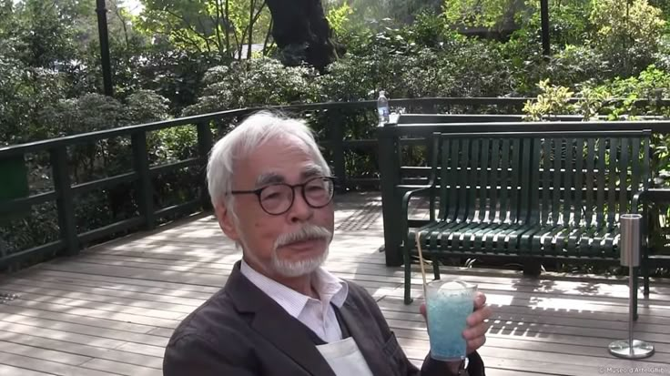

A Studio of Magic Worlds
Studio Ghibli

Interviwer: Aren't you worried about the Studio's
future?
Hayao: The future is clear. It's going to fall apart.
I can already see it. What's the use of worrying? It's
inevitable.
"Ghibli" is just a random name I got from
an airplane.
It's only a name.
Miyazaki on AI Animation
Miyazaki has long been publicly against AI creativity in the past. One of the most famous instances was in 2016 when Dwango AI Lab researchers introduced him to an AI-generated animation project. The presentation was in the form of a robotically walking, AI-generated monster, in order to demonstrate the ability of machine learning to be used in animation. Miyazaki’s reaction was anything but impressed. He called the demonstration “an insult to life itself,” expressing deep discomfort at the idea of removing human intention and emotion from animation. His reaction was widely popular online. Given this history, it is unsurprising that AI-generated Ghibli art has sparked fresh discussions among fans and industry professionals.
Dwango AI Lab (Dwango Artificial Intelligence Laboratory)